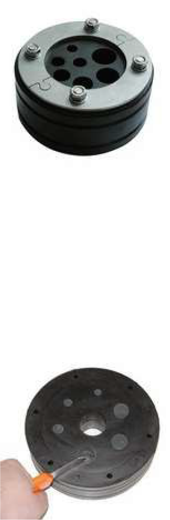
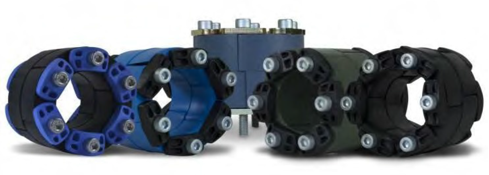
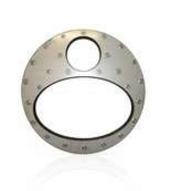
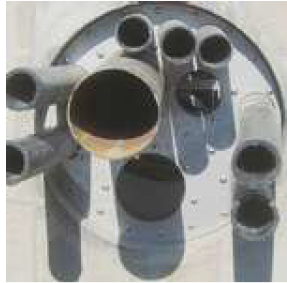

Sızdırmazlık Sistemi
Basınçlı veya basınçsız ortamlarda gaz, su, atıksu boruları ve kablo duvar geçişlerinde özel tasarımlı PSI Compakt Seal’ler sızdırmazlık ihtiyacı için ideal çözümlerdir.


Uzun Ömürlü, Sızdırmazlık Dayanımlı, Her Çap İçin Kullanılabilir, Güvenli, Modüler, Kauçuk Contalı, Ayarlanabilir Sızdırmazlık Sistemi
LINK-SEAL® modüler sızdırmazlık elemanları petrol, gaz, su ve kanalizasyon borularının yanı sıra kabloların duvar geçişlerinde sızdırmazlık için idealdir. Gerek duvar gerek döşemeden geçişler, çelik tank girişleri, tekneler için uygundur. Sahanıza uygun çeşidimizi belirleyerek size uygun uzun ömürlü çözümü sunuyoruz.
Duvarda bırakılan düzgün bir delik veya keson boru parçası ile beraber seçilen LINKSEAL® ile tek yapmanız gereken iç boruyu merkezlemek, sızdırmazlık contasını içine yerleştirmek ve civataları belirtilen tork değerlerinde sıkmaktır.
Kauçuk sızdırmazlık elemanlarının radyal genleşmesi ile halka şeklinde boru dış yüzeyine ve delik iç yüzeyine aynı anda baskı uygulayarak aradaki boşluğu kalıcı olarak basınçla kapatır ve sızdırmazlık sağlar.
ADA Mühendislik Link Seal Karot Uygulaması
Dış çapı 4–32; 40; 50 mm arasında olan kondüit boruların veya kabloların duvar geçişleri için rahatça seçim yapılabilecek konfigürasyon imkânı sunmaktadır. 1 bar basınca kadar sızdırmazlık dayanımı sağlar. Ayrılabilir parçalardan oluşan bir sisteme sahip olmasından dolayı mevcut yapıların güçlendirilmesinde veya rehabilitasyonunda uygundur. Boru veya kablo duvar geçişleri yapıldıktan sonra Compakt seal üzerinde kullanılmayan delikler için kör tapa ile basınca dayanıklı kapatma yapılarak montajdan sonra ilerideki ihtiyaçlar için kullanma imkânı sağlanmaktadır. Böylece ileride ihtiyaç duyulduğunda yeniden delgiye gerek olmadan hazır delikler sağlanmış olur. Kurulum için bir tork anahtarından başka özel bir alete gerek yoktur.

Basınçlı veya basınçsız ortamlarda gaz, su, atıksu boruları ve kablo duvar geçişlerinde özel tasarımlı PSI Compakt Seal’ler sızdırmazlık ihtiyacı için ideal çözümlerdir.

PSI Özel Compakt Seal’leri müşteri talebi üzerine üretilebilir çözümlerdir. Tüm çeşitler neredeyse mümkündür: oval borular, kare kesitli geçişler, eksantrik konumlandırmalar, parçalı / açık veya kapalı tip boru veya kablo geçişleri.

Kauçuk malzeme standart olarak EPDM olup metan gazı (biyogaz tesisleri) olan ortamlar için NITRIL kauçuk, içme suyu için Viton ve EPDM kauçuktur. Baskı plakaları için standart olarak S304 (V2A) paslanmaz çelik kullanılır. Talep üzerine S316 (V4A) ve epoksi kaplı baskı plakaları da sunulmaktadır.